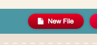
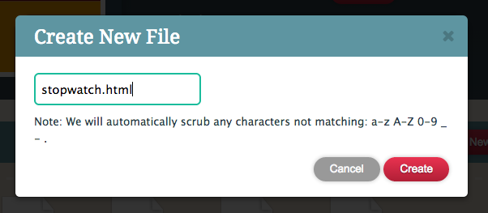
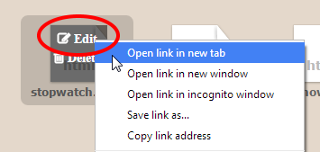
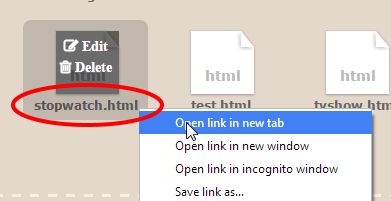
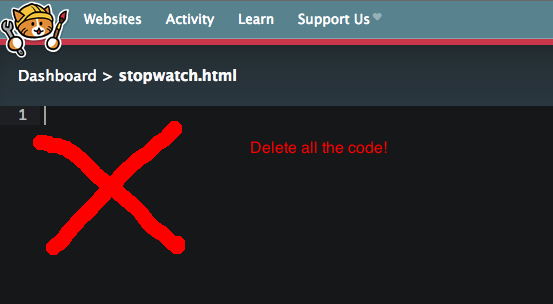
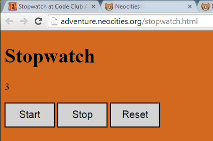

I asked a programmer to make a stopwatch to help me practice my speech. But they made it all wrong!
(This activity uses JavaScript.)
What skills do I need?
This is best if you've tried HTML, CSS and maybe even a little bit of JavaScript before.
By now you should also know how to create a new page in Neocities, view it and open it for editing.
Part 1: Set up Neocities
Make a new file:
Call it stopwatch.html
Open a tab to edit the new page.
Open a tab to view the new page.
In the editing tab, delete all the code.
Copy and Paste this code instead:
<!DOCTYPE html>
<html>
<head>
<meta charset='utf-8'>
<meta name="viewport" content="width=device-width, initial-scale=1">
<title>Stopwatch</title>
<style>
/*This is the start of the CSS*/
body {
background-color: chocolate;
font-size: 20px;
}
button {
border: 2px solid black;
background-color: lightgrey;
width: 100px;
height: 50px;
font-size: 20px;
}
</style>
</head>
<body>
<h1>Stopwatch</h1>
<p class="time">0</p>
<button class="button1">Start</button>
<button class="button2">Stop</button>
<button class="button3">Reset</button>
<script>
//Hello! This is the start of the JavaScript.
//set up:
//this variable holds the number to display
let timer = 100000;
//this variable decides if the timer is going or paused
let isTimerOn = true;
//tick tick tick tick...
//(This function works, you don't have to change anything in here!)
function tick() {
if (isTimerOn) {
timer = timer + 1;
}
//display the timer value
let timeElement = document.querySelector(".time");
timeElement.innerHTML = timer;
}
function start() {
//not working right...
alert("Start!");
}
function stop() {
//um...
timer = 0;
}
function reset() {
//not sure this is right
document.querySelector(".button3").style.width = "200px";
}
//call the function 'tick' over and over again
setInterval(tick, 1);
//When you click on a button it will call a function:
let button1 = document.querySelector(".button1");
button1.addEventListener("click", start);
let button2 = document.querySelector(".button2");
button2.addEventListener("click", stop);
let button3 = document.querySelector(".button3");
button3.addEventListener("click", reset);
//This is the end of the javascript
</script>
</body>
</html>
CHECK that you copied all the code. Save the page, then view it.

If it looks like this, you're ready to start!
What is this?
I asked a programmer to make an online stopwatch for me.
But they messed it up! 😕
Can you fix it?
Just JavaScript
You only need to change the JavaScript for this activity. The HTML and CSS works (but you can still improve it if you like).
The JavaScript starts with a <script> tag.
Part 2: What's going on here?
Try using the stopwatch. See what works and what doesn't.
Look through all the JavaScript and try to get a sense of what it does. Now you're ready to fix it!
Part 3: Wait until we're ready
The timer starts counting automatically. I want it to be stopped at first, so nothing happens until I click "start".
Find out why the timer starts automatically. Have a look around in the JavaScript - you only need to change one word.
CHECK: the timer does not start counting automatically.
Part 4: Start from zero
The timer should start from zero, not from 100000.
Find out why the timer is starting from that number and fix it.
CHECK the timer starts from zero.
Part 5: Start
Now we need to be able to start. There is already a 'start' button, connected to a start function, but the function makes a message pop up!
Please make it start counting instead.
Please get rid of the pop up message, it's annoying.
CHECK the start button tells the program to start counting.
Part 6: Stop
The stop button should stop counting. (Kind of like the start button, but the opposite!)
It should not reset the timer to zero. The same number should stay on the screen so I can tell how long I was talking for!
Part 7: Reset
This button should make the counter go back to zero. That's what the 'Stop' function used to do, until you fixed it.
Part 8: investigate setInterval
This code uses a command called setInterval. We haven't seen this before. Can you work out what it does? (Try googling it!)
What happens if you change the number used in setInterval?
Can you make the timer count one second at a time?
Part 9: CSS
Can you improve the layout by changing the CSS? I would like the number be displayed in a huge font so I can read it from across the room.
Please check how the page looks on your phone, because there's where I'm going to be using this.
Extra: links
In Neocities, you probably have lots of pages by now. Your index.html page is your home page. People who visit your site will automatically be sent there.
If you add links from your index.html page to all your other pages, people will be able to find them more easily.
Can you add links in index.html page to all the other pages you've created?
<a href="/stopwatch.html">my stopwatch</a>
<a href="/catcity.html">my cat city game</a>
<a href="/fivestar.html">my five star project</a>
<a href="/tvshow.html">my TV show idea generator</a>